Charlie Pegg
Since starting my design degree at Vic Uni, many doors have been opened for me. Character design, game design, photography, posters, graphic design, animation, comics, zines, webpages, and even an upcoming GM board I'm making, I love it all! It has also taught me that even when one door closes, you'll always find another that opens. So, if one of these doors is not to your liking, you might want to look at another. They move on their own, but you can scroll through them if you saw one you thought was interesting and wanted to jump to it.
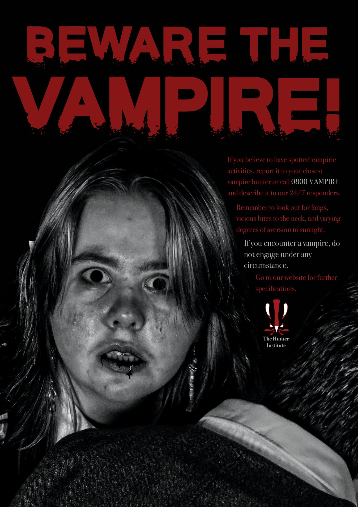
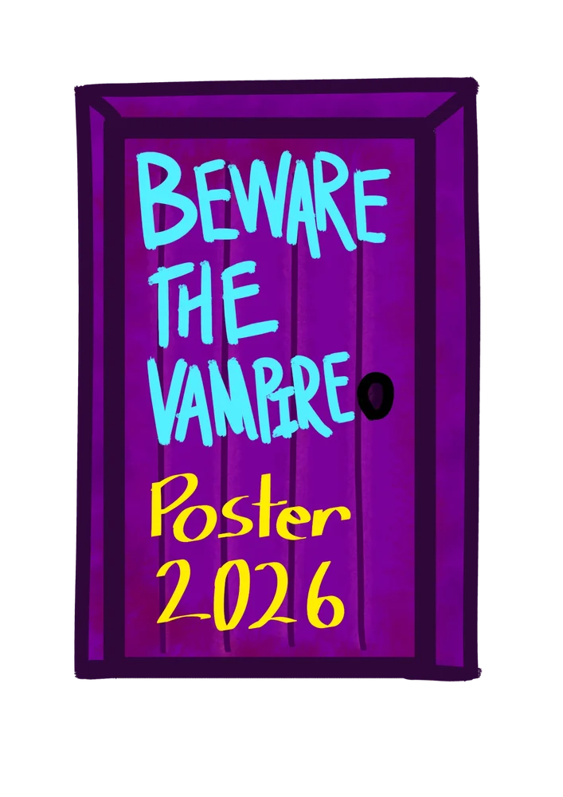
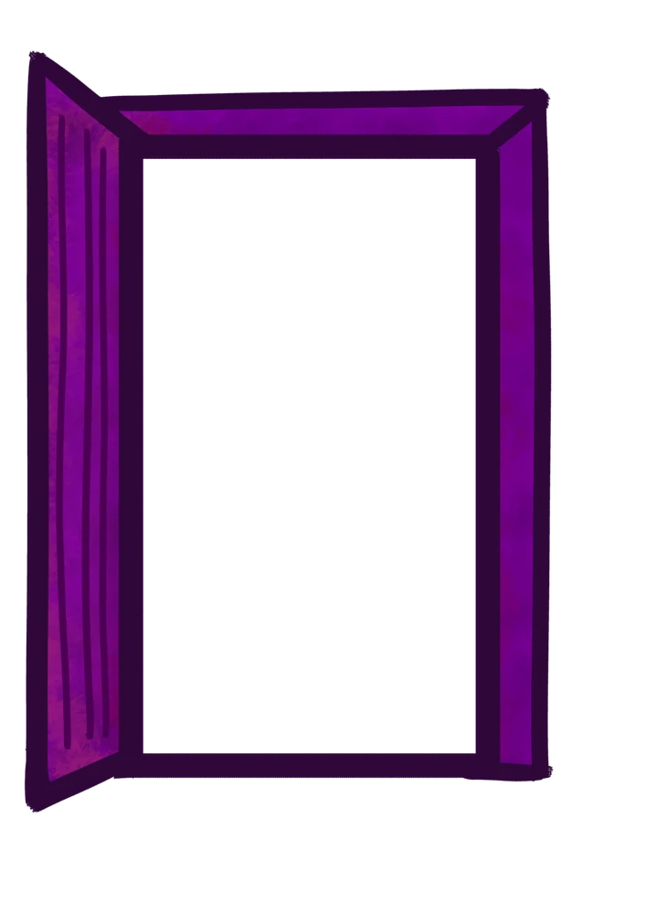
Beware the Vampire
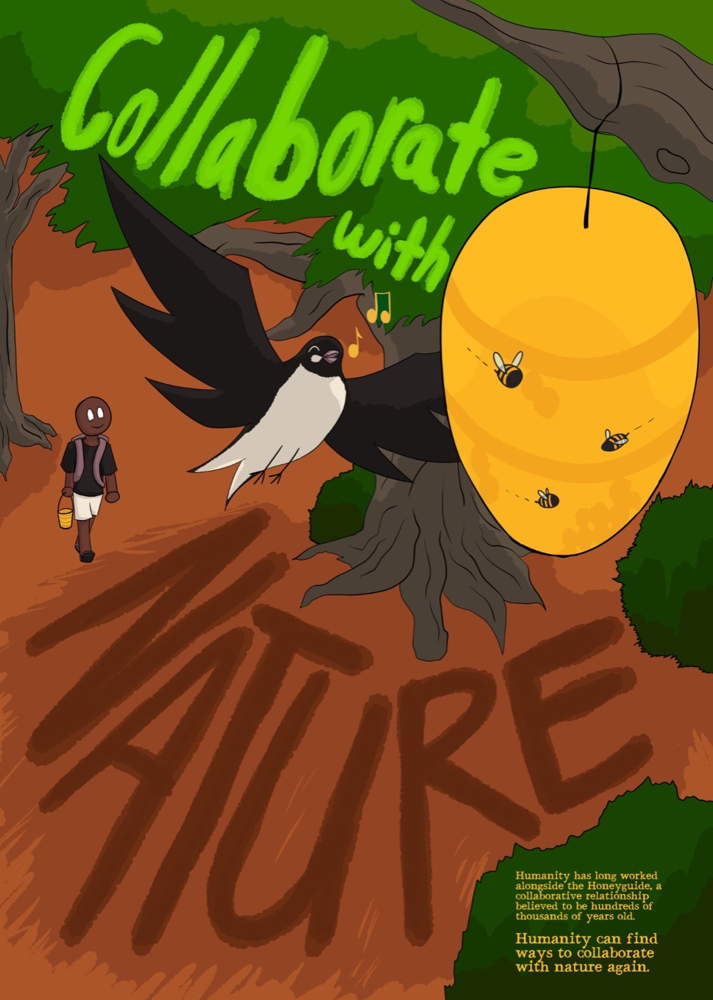
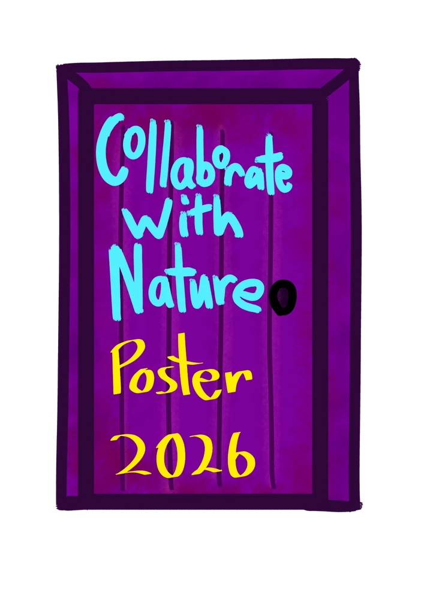
Collaborate with Nature
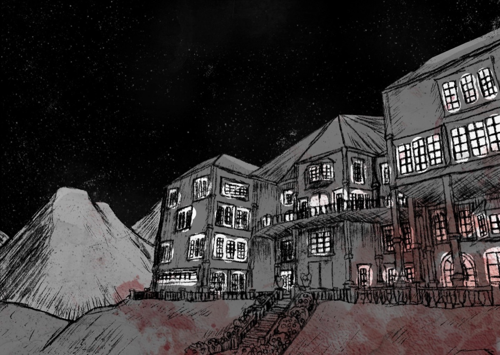
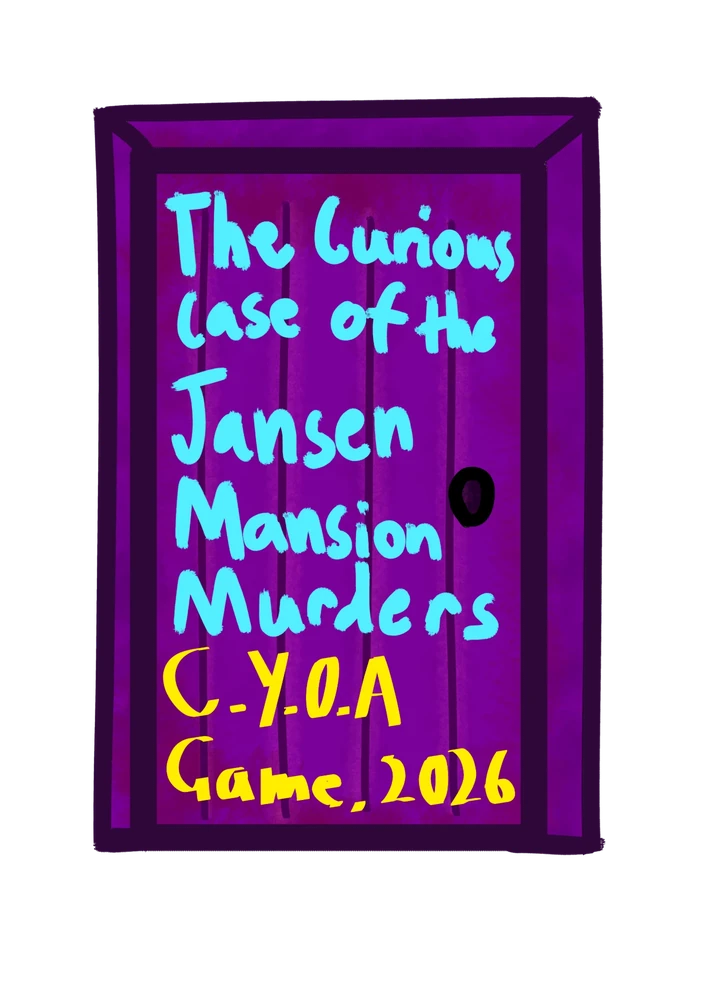
The Curious Case of the Jansen Mansion Murders

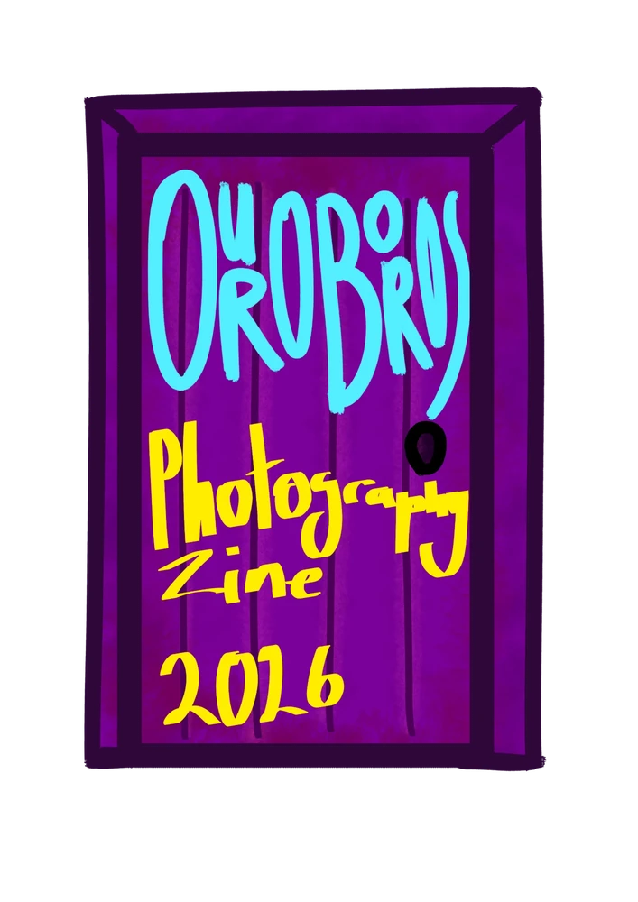
Ouroboros
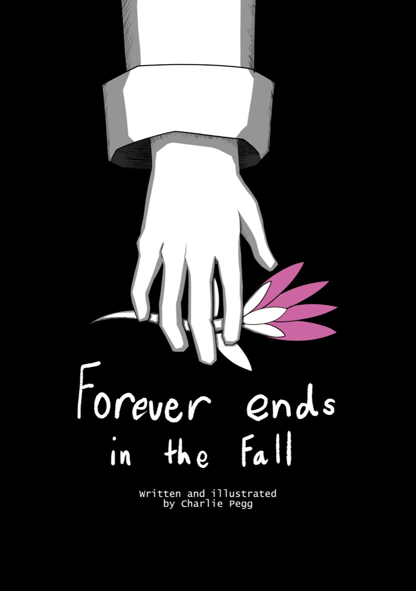
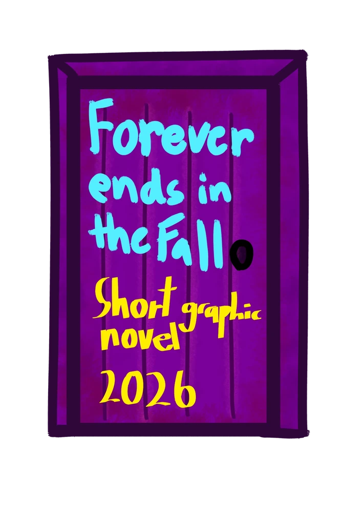
Forever ends in the Fall
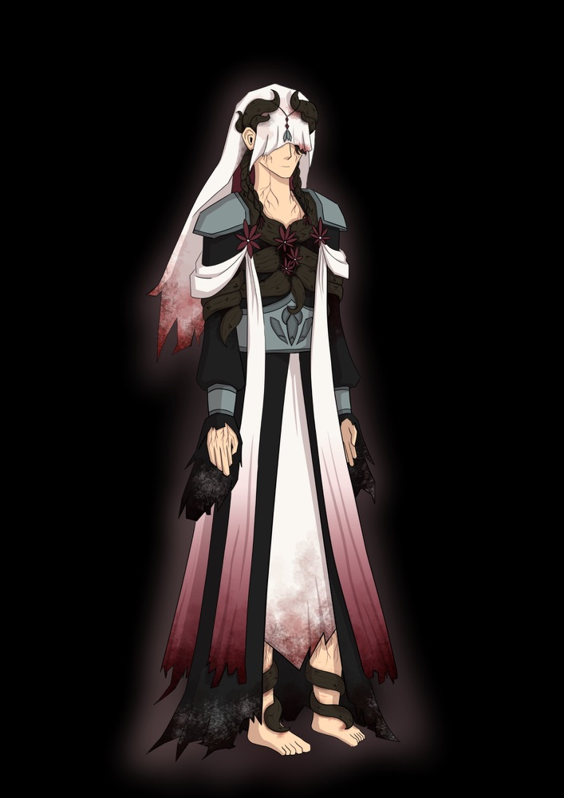
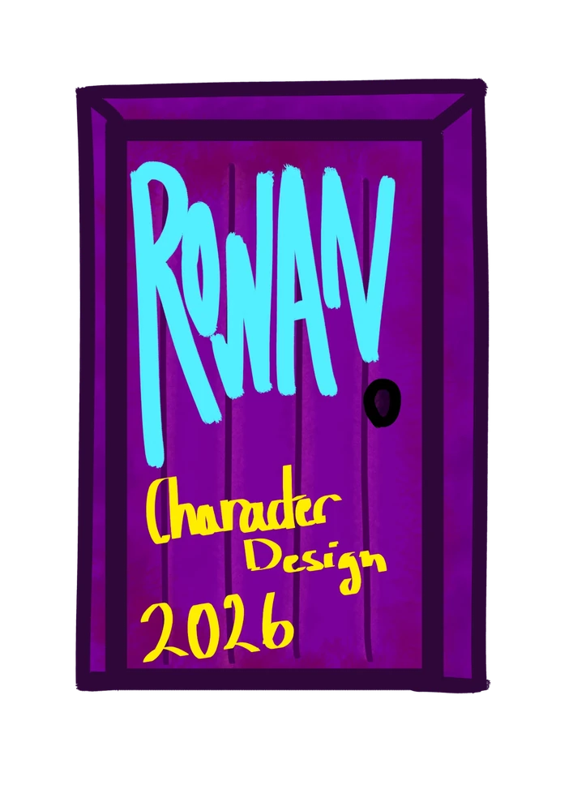
Rowan
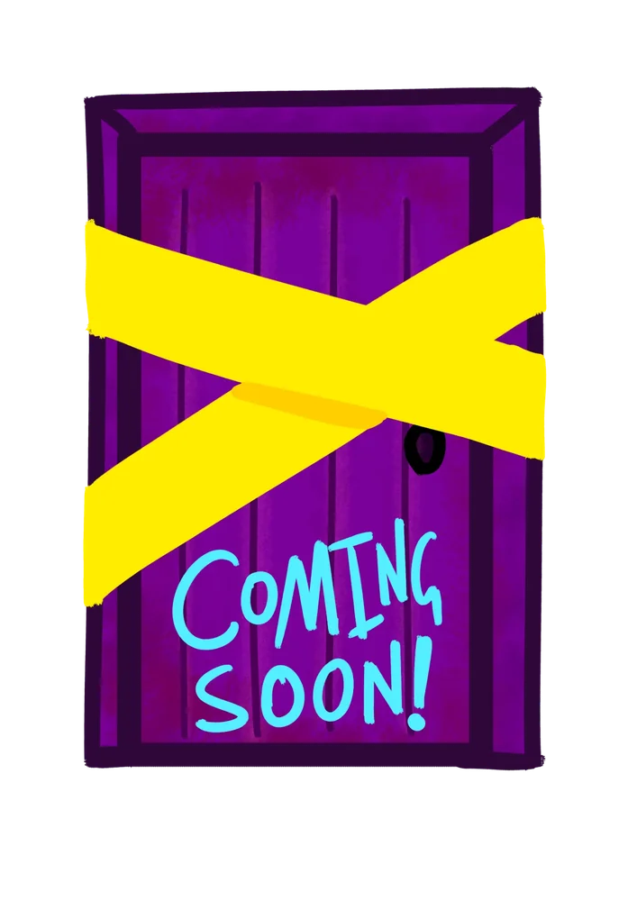
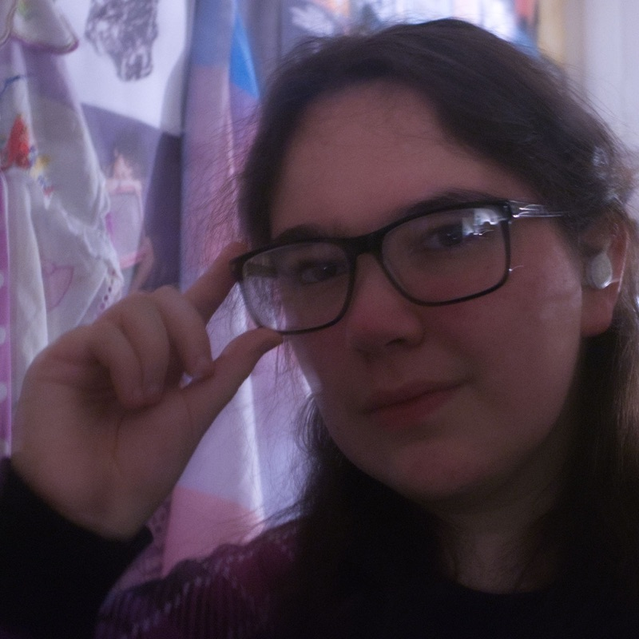
Kia ora, my name is Charlie. I'm a first year Communication and Game Design student at Victoria University. For me, I love using design as a medium to tell stories - from the ones that make you laugh to the ones that make you cry. I'm especially fascinated with how visual communication and design can strengthen the stories you tell and the characters you make, with some of my favourite designs being ones that excel at telling you so much about something with a glance, and I dream of being able to master that skill.
If you want to contact me, email me at charliepegg504@gmail.com